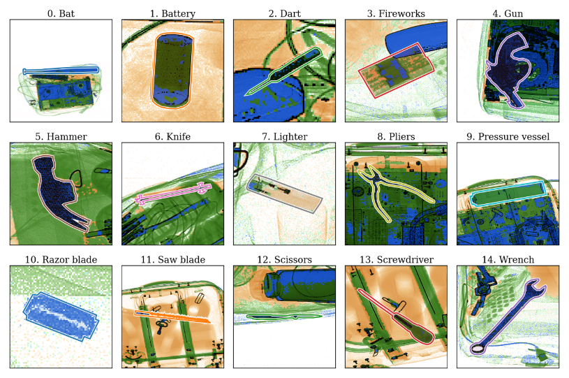
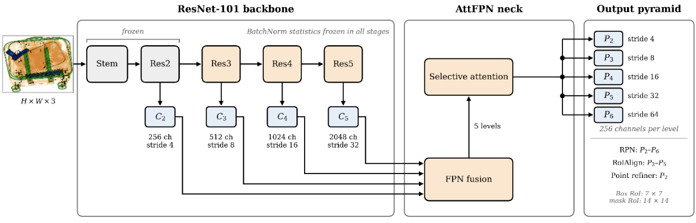
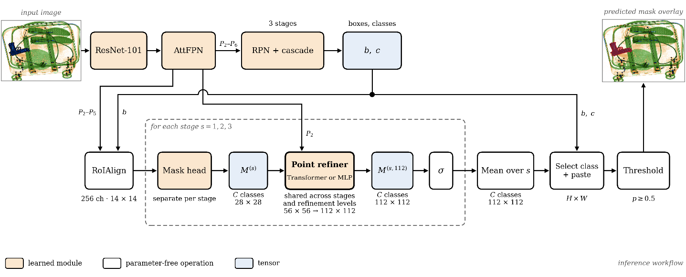
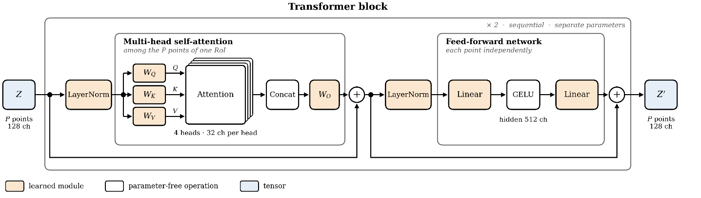
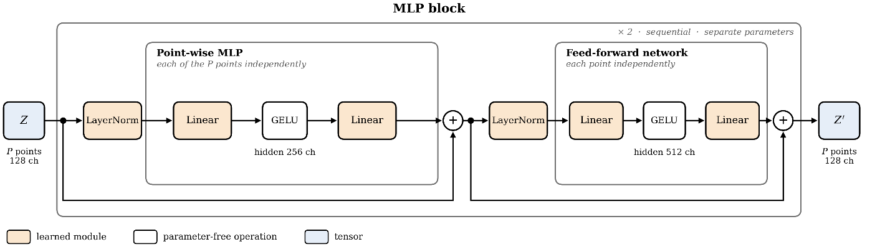
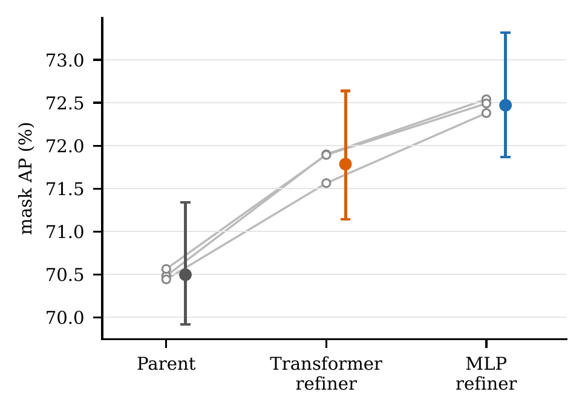
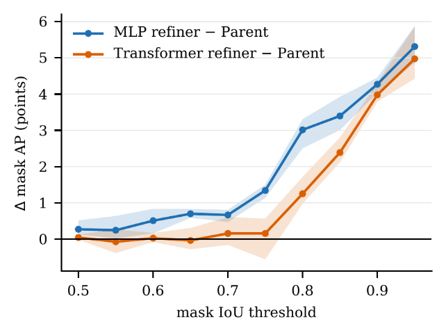
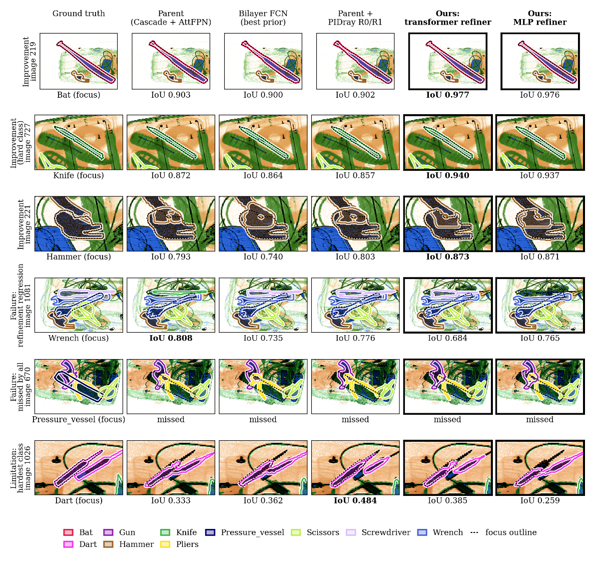

Abstract
Overlapping projections and complex object contours make prohibited items difficult to delineate in X-ray baggage images. This study investigates shared point-based mask refinement to improve instance segmentation within Cascade Mask R-CNN. The framework combines a ResNet-101 backbone with an attention-based feature pyramid and progressively updates uncertain mask locations, increasing mask resolution from 28 × 28 to 112 × 112. A single refinement module is shared across cascade stages and refinement levels, with transformer and multilayer perceptron (MLP) variants used to examine the role of interactions among selected points. Ten configurations were evaluated on the official PIXray split across three training seeds using the original target-instance annotations for evaluation. The transformer and MLP refiners achieved mean mask average precision (AP) of 71.79 and 72.47, respectively, compared with 70.50 for the unrefined detector, yielding gains of 1.29 and 1.97 AP points. The MLP achieved the highest mean mask AP among the evaluated configurations. Both variants also improved boundary agreement on commonly detected objects, supporting improved mask delineation, while detection diagnostics did not establish a corresponding positive gain. These findings demonstrate that shared point-based refinement can improve segmentation quality in the tested cascade architecture using existing target-mask annotations, without additional occluder supervision. Evaluation on independent X-ray datasets is needed to determine how well these improvements generalize.
Keywords: X-ray baggage inspection; prohibited items; instance segmentation; point-based mask refinement; uncertainty-guided sampling; PIXray.
1. Introduction
Automated detection and segmentation can support security screening, but X-ray imagery is harder than ordinary photographs: objects overlap in projection, appearance varies with material, and clutter hides the features needed to tell prohibited items from their surroundings. A correct detection box also does not guarantee an accurate mask. In the detector studied here each instance starts as a coarse 28 × 28 grid, so where projected objects overlap or have thin parts, the mask can omit parts of the object or include neighboring material.
Uncertainty-guided refinement allocates extra prediction capacity to selected locations, including those near boundaries, instead of recomputing the whole mask at higher resolution. PointRend established this form of point-based refinement; RefineMask and Mask Transfiner extend it with fine-grained features and transformer-based processing. Building on this work, our contribution is the shared, progressive integration of point refinement across the stages of a Cascade Mask R-CNN with ResNet-101 and AttFPN (the Parent), together with a controlled comparison of two point processors. PIXray is the common benchmark because its official split provides both boxes and instance masks for the same objects; it is one dataset with an all-positive test set, so it cannot assess clean-baggage rejection or generalization across scanners or sites.
Objectives
- Integrate shared, progressive point refinement across the stages of a Cascade Mask R-CNN with ResNet-101 and AttFPN.
- Run a controlled comparison of two point processors, Transformer and MLP, within an otherwise identical refiner.
- Check whether gains reflect mask delineation rather than better detection, under unchanged target-mask supervision.
Research questions
- RQ1 Does shared point refinement improve mask AP over the Parent?
- RQ2 How does attention among selected points affect mask AP relative to point-wise processing, and are the two variants equivalent within the study’s tolerance?
- RQ3 Does point refinement improve mask delineation, as assessed by stricter mask-overlap criteria and boundary agreement?
Hypotheses
- H1 Each refiner achieves a positive mask-AP gain over the Parent.
- H2 The mean mask-AP difference between the MLP and Transformer refiners lies within the study’s equivalence bounds of −1 to +1 AP point.
- H3 Relative to the Parent, point refinement produces a larger gain in mask AP75 than in mask AP50.
- H4 Relative to the Parent, point refinement improves boundary IoU on objects matched by both compared experiments in every evaluated seed.
H3 and H4 are evaluated separately for the Transformer and MLP refiners. Box AP and detection coverage were examined after scoring as diagnostics, to see whether the mask-quality gains came with changes in detection performance.
2. Methodology
2.1 Dataset
Experiments use PIXray: pseudo-colored X-ray baggage images annotated for 15 prohibited-item categories. The official split is used without modification: 3,560 training images (10,709 instances) and 1,486 test images (4,508 instances), 5,046 images and 15,217 instances in all. Every image holds at least one prohibited item. Each object has a category label, a bounding box and a polygon instance mask, which serves as its target mask; the annotations are retained unchanged.
PIXray-A adds occluder annotations. Only the Occ bilayer SAM and Bilayer FCN baselines use these occluder masks, and only during training; all other models, including both refiners, train on the original target-instance masks. Every model is evaluated against the original PIXray target-instance annotations of the official test split.

2.2 Data preprocessing and augmentation
All models share the same augmentation, sampled independently per training image: horizontal flip with probability 0.5; resize preserving aspect ratio at a nominal 512 × 512 scale multiplied by a ratio from [0.5, 1.5]; and a random crop to at most 512 × 512 (crops without instances are allowed). Boxes are recomputed from the transformed masks, images are converted from BGR to RGB and normalized with the standard channel means and standard deviations, and batches are padded to multiples of 32. At inference images are resized to fit 512 × 512 and padded; no test-time augmentation is used.
2.3 Base instance-segmentation framework
The Parent is Cascade Mask R-CNN with an ImageNet-pretrained ResNet-101 and AttFPN, a feature pyramid with channel and spatial attention that outputs five 256-channel levels, P2–P6 (strides 4–64). The backbone stem and first residual stage are frozen and batch-normalization statistics stay fixed. The finest level, P2, feeds the point refiner.

The three cascade stages use assignment IoU thresholds 0.5, 0.6 and 0.7. Each stage has its own mask head that maps 256 × 14 × 14 RoI features to class-specific 15 × 28 × 28 coarse-mask logits. Training combines the RPN losses with cascade classification, box-regression and coarse-mask losses (stage weights 1, 0.5, 0.25). At inference, stage scores are averaged and final-stage boxes go through class-wise NMS; each stage’s mask for a final detection is refined, converted to probabilities, averaged across stages, projected into the detection box and thresholded at 0.5.

2.4 Uncertainty-guided mask refinement
Following PointRend, a shared point-refinement module progressively refines each stage’s 28 × 28 coarse mask to 56 × 56 and then 112 × 112, using image features, coarse-mask predictions, point coordinates and the refinement level. Each level updates logits at selected uncertain locations and keeps the interpolated values elsewhere. The refiner is shared across all three cascade stages and both refinement levels; the coarse mask heads remain separate.
Point selection and embedding
The current mask of each RoI is upsampled to the level’s resolution, and uncertainty is the distance of a logit from zero. Selection uses this evolving mask, so the second level already contains the first level’s updates:
U(s, r)(u) = − | M̃(s, r)c(u) |, r ∈ {56, 112}
Here M̃ is the upsampled logits before the current update and c is the assigned ground-truth class in training or the predicted class at inference. Training selects 196 unique points per positive RoI and level: the 147 most uncertain of 588 uniformly sampled candidates, plus 49 uniformly sampled from the remaining grid locations. Inference selects 784 points per RoI and level with the largest adjusted scores U(s, r)(uj) − jε, where j is the zero-based flattened grid index and ε is the FP32 machine epsilon; this index-dependent offset can reorder near-equal uncertainty values. Each selected point becomes a 128-dimensional token from four inputs: the P2 image feature f (256-d, bilinearly sampled), the original 28 × 28 coarse logits m of the same stage (15-d), normalized RoI-relative coordinates u and a learned refinement-level embedding er:
zi = LN[ φf(fi) + φm(mi) + φp(ui) + er ] ∈ ℝ128
The image branch is a linear 256→128 projection; the mask and coordinate branches use two linear layers with GELU (15→64→128 and 2→128→128). Projection weights are shared across stages and levels, and no cascade-stage embedding is used.
Refinement variants and mask update
The P tokens of one RoI, Z(0) ∈ ℝP×128, pass through two pre-normalization residual blocks:
H(b) = Z(b−1) + Mixb(LNb,1(Z(b−1)))
Z(b) = H(b) + FFNb(LNb,2(H(b))), b ∈ {1, 2}
The two variants differ only in Mix. In the Transformer refiner, Mix is multi-head self-attention (four heads of 32 channels) that operates only among the points of the same RoI. In the MLP refiner, Mix is a point-wise 128→256→128 MLP with GELU, so points are processed independently. Both use the same 128→512→128 feed-forward network, layer normalization and residual connections, with no dropout. The two blocks have separate parameters, while the complete refiner is reused across stages and levels. A final LayerNorm and a linear 128→15 decoder give class logits at each selected point; these replace the interpolated values rather than being added as residual corrections. The updated 56 × 56 grid is upsampled and refined again to give 112 × 112. Each variant adds about 0.46 M parameters and is trained jointly with the detector.


2.5 Training objective
Point supervision supplements the base-detector losses and applies to positive RoIs at both refinement levels of every cascade stage. Targets are sampled bilinearly from the augmented ground-truth instance masks (so they can be soft near boundaries) and scored with binary cross-entropy on the assigned class channel:
Ls, rpoint = 1KsP ΣKsk=1 Σ i∈S BCEWithLogits( ℓi[ck], gk(pi) )
Ks is the number of positive RoIs at stage s, P = 196 is the training point budget per RoI and level, S is the selected point set, ck the assigned class, ℓ the decoded logits, and gk the assigned augmented ground-truth mask evaluated at point pi. A stage with no positive RoIs contributes no point loss. Averaging the two levels gives the complete objective:
L = Lbase + ½ Σ3s=1 ws (Ls, 56point + Ls, 112point), (w1, w2, w3) = (1, 0.5, 0.25)
Lbase is the existing RPN loss plus the weighted cascade classification, box-regression and coarse-mask losses. The two levels count equally, stage weights are applied once, and no extra point-loss multiplier is tuned.
2.6 Compared baselines
The two refiners are compared with eight reference experiments: Mask R-CNN and Cascade Mask R-CNN with standard feature pyramids; the AttFPN Parent and its recall-RPN and PIDray R0/R1 adaptations; and three SAM or bilayer experiments (RSPrompter with SAM and LoRA, Occ bilayer SAM, and Bilayer FCN). Only Occ bilayer SAM and Bilayer FCN use PIXray-A occluder masks in training. The references are adaptations to this shared setting with a common, untuned training budget, so their rankings describe these implementations.
3. Experimental setup
3.1 Implementation and training
All experiments are implemented in MMDetection with the shared settings in Table 1 and no architecture-specific tuning of the training budget. Each run is evaluated with its final-epoch checkpoint, without validation-based model selection. Activation checkpointing was enabled in the SAM image encoder of Occ bilayer SAM to reduce training memory. Shared seed labels do not imply identical initialization or augmentation streams across architectures.
Table 1. Shared experimental settings.
- Training batch size
- 4
- Epochs
- 50
- Optimiser / learning rate
- AdamW, 1 × 10−4; weight decay 0.05; betas (0.9, 0.999)
- Schedule
- linear warm-up (25 iterations); epoch-wise cosine decay, configured minimum 1 × 10−7
- Precision
- Training: FP16 AMP with dynamic loss scaling; evaluation: FP32 without autocast
- Gradient clipping
- L2 norm 1.0
- Seeds / runs
- 42, 123, 2026; 30 training runs
- Checkpoint rule
- final epoch (50); no validation-based selection
- Inference thresholds
- score ≥ 0.05; NMS IoU 0.5; ≤ 100 detections; mask threshold 0.5
- Hardware
- 1 × NVIDIA RTX 4090, 24 GB
3.2 Statistical analysis
- Primary outcome: official COCOeval mask AP, averaged over IoU 0.50–0.95 and 15 categories, on the 1,486 test images against the original target annotations (predictions kept at score ≥ 0.05).
- Reporting: means over seeds 42, 123 and 2026 with sample SD; paired effects are means of within-seed differences; 95% CIs from 2,000 paired seed-and-image bootstrap replicates.
- Tests: 5,000 two-sided paired image permutations for primary mask-AP differences, with Holm correction within each test family. Positive effect claims require a positive estimate, adjusted p < 0.05 and an unadjusted 95% CI above zero.
- H2: the 90% bootstrap interval is compared with ±1-AP equivalence bounds, a study-specific tolerance that has not been externally validated; an approximate TOST p-value is reconstructed from the 95% interval.
- H3 / H4: whether the gain is larger at AP75 than at AP50; and the paired boundary-IoU difference (contour band 2% of the image diagonal) on objects matched by both compared experiments in every seed. This endpoint replaces the planned Boundary AP, which was not computed.
- Diagnostics: box AP and detection coverage (one-to-one same-class matching at score ≥ 0.5, box IoU ≥ 0.5), examined after scoring and left unadjusted; they test neither equivalence nor noninferiority.
4. Results
4.1 Overall performance and refiner comparison
The MLP refiner achieved the highest mean mask AP among the ten experiments, followed by the Transformer refiner; both exceeded the Parent under the same original target-mask supervision. Bilayer FCN was the highest-scoring reference, but it and Occ bilayer SAM use extra occluder annotations, so reference rankings are descriptive.
| Experiment | Mask AP, mean ± SD | 95% CI for mask AP | Mask AP50 | Mask AP75 | Mask AR100 | Box AP |
|---|---|---|---|---|---|---|
| Mask R-CNN | 68.15 ± 0.05 | [67.6, 69.1] | 93.6 | 78.0 | 71.9 | 77.1 |
| Cascade Mask R-CNN | 70.20 ± 0.04 | [69.6, 71.0] | 93.9 | 80.7 | 73.2 | 81.1 |
| Cascade + AttFPN (Parent) | 70.50 ± 0.06 | [69.9, 71.3] | 94.0 | 81.1 | 73.4 | 81.5 |
| Parent + recall RPN | 70.24 ± 0.22 | [69.7, 71.1] | 94.2 | 80.6 | 73.3 | 81.5 |
| RSPrompter (SAM + LoRA) | 62.45 ± 0.11 | [61.9, 63.3] | 92.9 | 70.9 | 65.7 | 76.2 |
| Occ bilayer SAM† | 62.66 ± 0.10 | [62.1, 63.5] | 93.0 | 70.8 | 65.9 | 76.1 |
| Bilayer FCN† | 70.65 ± 0.08 | [70.1, 71.5] | 94.3 | 81.4 | 73.7 | 81.6 |
| Parent + PIDray R0/R1 | 70.36 ± 0.12 | [69.8, 71.2] | 94.1 | 80.9 | 73.3 | 81.5 |
| Transformer refiner (ours) | 71.79 ± 0.19 | [71.1, 72.6] | 94.1 | 81.2 | 74.7 | 81.2 |
| MLP refiner (ours) | 72.47 ± 0.08 | [71.9, 73.3] | 94.3 | 82.4 | 75.3 | 81.3 |
Three-seed means (0–100); sample SD across seeds; seed-and-image bootstrap CIs. Bold: highest unrounded column means. † Extra occluder supervision.
Both refiners exceeded the Parent in every seed, supporting H1 with gains of 1.29 AP for the Transformer and 1.97 for the MLP (both Holm-adjusted p < 0.001). The MLP exceeded the Transformer by 0.69 AP, but the 90% CI [0.49, 0.88] satisfied the study’s ±1-AP equivalence criterion.

| Hypothesis | Paired comparison | Δ by seed: 42 / 123 / 2026 | Mean paired Δ [95% CI] | Permutation p | Holm p |
|---|---|---|---|---|---|
| H1 | Transformer − Parent | +1.42 / +1.12 / +1.33 | +1.29 [+0.99, +1.54] | <0.001 | <0.001 |
| H1 | MLP − Parent | +2.06 / +1.94 / +1.93 | +1.97 [+1.75, +2.20] | <0.001 | <0.001 |
| H2: observed difference | MLP − Transformer | +0.64 / +0.82 / +0.60 | +0.69 [+0.45, +0.92] | <0.001 | — |
AP points. CI: paired seed-and-image bootstrap; p: paired image permutation; Holm over the two H1 tests. H2 equivalence: 90% CI [+0.49, +0.88] within ±1 AP (approximate TOST p = 0.005). — not adjusted.
4.2 Mask quality and detection diagnostics
The AP75-minus-AP50 gain contrast supported H3 for the MLP refiner (+1.07 AP points; Holm-adjusted p = 0.008) but was inconclusive for the Transformer (+0.11 AP; Holm-adjusted p = 0.798). Both supported H4 through increased boundary IoU (both Holm-adjusted p < 0.001), but their separate common-match samples prevent a direct processor comparison on identical objects. The larger gains at stricter mask-IoU thresholds in Figure 7 are descriptive and do not replace the H3 test.
All four diagnostic point estimates were slightly negative, and their 95% confidence intervals included zero. These analyses did not establish either a positive detection gain or unchanged detection performance. For Transformer box AP, the percentile-bootstrap interval includes zero before rounding despite the separate normal-approximation p-value of 0.045; the discrepancy reflects the different procedures and is not treated as a confirmed reduction.

| Analysis | Outcome | Refiner | Mean Δ [95% CI] | Test | p | Holm p |
|---|---|---|---|---|---|---|
| H3 | ΔAP75 − ΔAP50 | Transformer | +0.11 [−0.81, +0.88] | Normal approximation* | 0.798 | 0.798 |
| H3 | ΔAP75 − ΔAP50 | MLP | +1.07 [+0.30, +1.76] | Normal approximation* | 0.004 | 0.008 |
| H4 | Boundary IoU | Transformer | +0.71 [+0.64, +0.79] | Image-cluster sign-flip | <0.001 | <0.001 |
| H4 | Boundary IoU | MLP | +1.14 [+1.07, +1.21] | Image-cluster sign-flip | <0.001 | <0.001 |
| Diagnostic | Box AP | Transformer | −0.27 [−0.52, +0.00] | Normal approximation* | 0.045 | — |
| Diagnostic | Box AP | MLP | −0.18 [−0.50, +0.15] | Normal approximation* | 0.284 | — |
| Diagnostic | Detection coverage | Transformer | −0.22 [−0.46, +0.01] | Image-cluster sign-flip | 0.069 | — |
| Diagnostic | Detection coverage | MLP | −0.17 [−0.39, +0.05] | Image-cluster sign-flip | 0.178 | — |
Δ: refiner − Parent (AP points; percentage points otherwise). *Normal approximation; Holm: joint H3–H4. AP: 1,486 images × 3 seeds; diagnostics unadjusted; sign-flip tests clustered by image.
Hypothesis outcomes
- H1SupportedBoth refiners beat the Parent in every seed (+1.29 and +1.97 AP).
- H2SupportedMLP is +0.69 AP over Transformer, inside the ±1 AP bounds.
- H3PartlySupported for the MLP; inconclusive for the Transformer.
- H4SupportedBoundary IoU improved for both on their matched-object samples.
4.3 Per-class and qualitative results
Table 5 reports absolute class AP across all ten experiments. In separate paired comparisons with the Parent, the MLP had positive gains in 14 of 15 classes (eight meeting the Holm-adjusted criterion) and the Transformer in 11 (seven meeting it). These tests use approximate p-values, with corrections across 15 classes per contrast. Dart had the lowest Parent AP and did not improve with either refiner.
| Class | n | Mask R-CNN | Cascade | Parent | Recall RPN | RSPrompter | Occ SAM† | Bilayer FCN† | R0/R1 | Transformer | MLP |
|---|---|---|---|---|---|---|---|---|---|---|---|
| Dart | 323 | 37.0 | 37.4 | 38.0 | 38.1 | 20.0 | 20.2 | 38.8 | 37.8 | 37.7 | 37.7 |
| Saw blade | 287 | 43.2 | 47.8 | 48.2 | 47.8 | 38.7 | 39.0 | 48.5 | 48.5 | 47.8 | 52.5 |
| Knife | 330 | 53.1 | 56.3 | 56.5 | 56.2 | 45.4 | 45.7 | 56.7 | 56.3 | 57.0 | 57.9 |
| Screwdriver | 287 | 56.7 | 59.6 | 60.4 | 59.8 | 52.7 | 53.1 | 60.6 | 60.0 | 63.7 | 63.1 |
| Pliers | 264 | 59.0 | 61.7 | 61.8 | 61.0 | 51.1 | 51.1 | 61.6 | 61.3 | 62.5 | 66.1 |
| Lighter | 265 | 66.6 | 68.5 | 68.7 | 68.2 | 59.0 | 58.9 | 68.9 | 68.7 | 69.7 | 69.2 |
| Razor blade | 271 | 69.6 | 69.9 | 70.1 | 70.3 | 61.2 | 61.3 | 70.3 | 69.9 | 70.0 | 70.3 |
| Wrench | 349 | 67.0 | 70.8 | 71.3 | 71.0 | 66.2 | 66.5 | 71.8 | 71.3 | 73.2 | 74.2 |
| Scissors | 290 | 73.7 | 75.7 | 75.7 | 75.1 | 62.1 | 63.1 | 75.8 | 75.6 | 77.1 | 77.3 |
| Fireworks | 282 | 74.8 | 76.5 | 77.2 | 76.7 | 73.9 | 73.8 | 76.6 | 76.8 | 78.4 | 78.3 |
| Battery | 360 | 79.0 | 80.0 | 80.4 | 80.0 | 74.0 | 73.7 | 80.4 | 80.0 | 80.4 | 80.4 |
| Gun | 292 | 83.3 | 84.7 | 84.9 | 84.7 | 80.5 | 80.9 | 85.0 | 84.8 | 86.1 | 86.2 |
| Hammer | 322 | 84.2 | 85.8 | 85.4 | 85.8 | 78.4 | 78.5 | 85.5 | 85.4 | 86.5 | 86.3 |
| Pressure vessel | 297 | 86.3 | 89.2 | 89.2 | 89.0 | 84.8 | 85.2 | 89.6 | 89.2 | 91.9 | 92.5 |
| Bat | 289 | 88.7 | 89.2 | 89.7 | 89.8 | 88.8 | 88.9 | 89.6 | 89.6 | 94.7 | 95.1 |
Absolute mask AP (%); n = test objects. Parent = Cascade + AttFPN; Recall RPN and R0/R1 extend the Parent; Occ SAM = Occ bilayer SAM. † Extra occluder supervision. Bold: highest unrounded mean (descriptive). For Battery and Razor blade, the MLP has the highest unrounded mean despite ties after rounding.
Figure 8 shows selected seed-42 successes and failures. Both refiners improved the Bat outline, while the crowded Wrench example shows deterioration, particularly with Transformer refinement. The printed values are single-object IoUs from seed 42; these examples illustrate the quantitative findings without estimating population-level performance.

4.4 Computational cost
The refiners add about 0.46 M parameters to the Parent and required longer mean training, with somewhat lower measured end-to-end throughput. The SAM-based experiments have much larger total parameter counts but fewer trainable parameters because their encoders are adapted with LoRA; they also have the lowest measured throughput. Parent + PIDray R0/R1 stayed close to the Parent’s training duration. These comparisons describe measured cost and do not establish significant timing differences.
| Experiment | Total parameters | Training hours, mean | End-to-end images/s, mean ± SD |
|---|---|---|---|
| Mask R-CNN | 63,038,634 | 1.46 | 33.7 ± 4.0 |
| Cascade Mask R-CNN | 96,066,744 | 2.71 | 26.1 ± 1.2 |
| Cascade + AttFPN (Parent) | 97,103,679 | 2.99 | 24.6 ± 0.3 |
| Parent + recall RPN | 97,107,534 | 3.07 | 23.9 ± 3.2 |
| RSPrompter (SAM + LoRA) | 332,667,534 | 4.80 | 14.4 ± 0.3 |
| Occ bilayer SAM† | 336,725,874 | 7.21 | 14.3 ± 1.6 |
| Bilayer FCN† | 105,173,841 | 4.14 | 21.0 ± 0.3 |
| Parent + PIDray R0/R1 | 98,684,224 | 2.88 | 23.5 ± 0.2 |
| Transformer refiner (ours) | 97,562,062 | 5.22 | 22.3 ± 2.8 |
| MLP refiner (ours) | 97,561,806 | 4.87 | 23.3 ± 2.8 |
Training hours: three-seed mean. Throughput: mean ± SD across three seeds at evaluation batch size 1, including loading, inference, scoring and writing; not model-only latency. † Extra occluder supervision; Occ bilayer SAM used activation checkpointing. Costs are descriptive.
Citation
If you use this work, please cite the paper (arXiv:2611.20476).
@misc{alqahtani2026improving,
title = {Improving X-Ray Baggage Instance Segmentation with Shared Point-Based Mask Refinement},
author = {Alqahtani, Abdulaziz and Umer, Qasim},
year = {2026},
eprint = {2611.20476},
archivePrefix = {arXiv},
primaryClass = {cs.CV},
doi = {10.48550/arXiv.2611.20476},
url = {https://arxiv.org/abs/2611.20476}
}